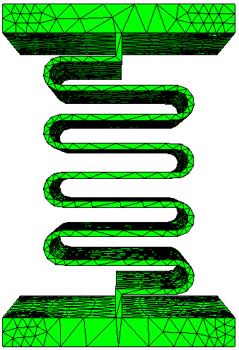
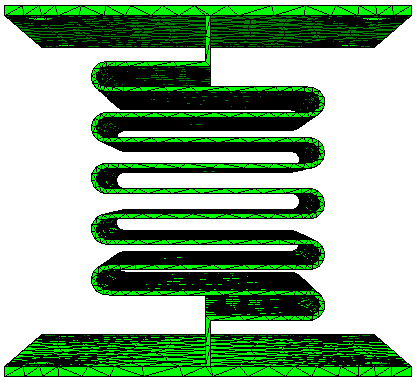
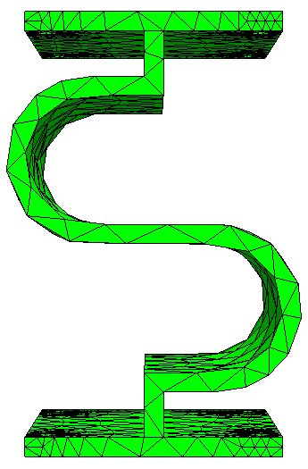

Miscellaneous#
3D-printed frame structure#
For our experiments we needed some easy-to-configure structures to be able to quickly iterate over experimental setups. For this we used 3D-printed springs which we generated with the open-source software OpenSCAD. The springs can be changed in some parameters, e.g. thickness, number of windings etc., and exported to an STL-file, which can then be 3D-printed. The nice thing about this is that it is easy to change the mechanical behavior of the experimental setup and with 3D-printed structures it is also possible to do some low-cost destructive tests, if desired. One downside might be that OpenSCAD is a bit tricky to work with and needs some time to learn.
Generally we found some advantages in working with 3D-printed structures, since they are low-cost, low-weight and allow for fast iterations in the setup. It is also possible to do some preliminary analysis on complicated structures. For teaching purposes this also offers some interesting concepts, as students can design and test their structures in a controlled and (relatively) safe environment, without risks of damaging expensive machines or equipment.
FE simulations#
It is possible to export the springs generated with OpenSCAD to mesh-files for finite element analysis, which allow for even more versatility in teaching and experiments. With this it is possible to do some preliminary analysis before the actual tests and it could also be interesting to verify the FE analysis in experiments.
  {kind=link}
{kind=link}
{kind=link}